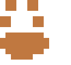

Trilha: Mestre das Feras
O Mestre das Feras cria vínculos profundos com animais companheiros e montarias, comunicando-se perfeitamente com eles. O laço prolongado pode ganhar tons quase mágicos.
Características
Ataques
- Adicionam metade do rank em ataques melee e à distância.
Armas
- Sabem usar qualquer tipo de arma.
Armaduras
- Sabem usar qualquer armadura e escudo, mas metal pode impedir certas habilidades.
Bônus de Trilha Principal
- Pode começar com 2 animais pequenos ou 1 grande.
- Comanda +1 companheiro em combate além do limite normal.
- Companheiros ganham 1d6 PV por rank (em vez de 1d4).
- Pode domar bestas fantásticas (pequenas/médias no 5º; grandes no 9º), contando como animais extras.
Habilidades do Mestre das Feras
Companheiros e limite
Ao evoluir na Trilha, você pode criar vínculos com novas feras. Companheiros contam para o limite de seguidores (CAR).
Limite por rank (animais médios):
- Rank 1–2: 1
- Rank 3–4: 2
- Rank 5: 2
- Rank 6–8: 3
- Rank 9: 3
- Rank 10: 4
A partir do rank 2, pode trocar 1 médio por 2 pequenos, ou 2 médios por 1 grande.
Vínculo
- Companheiros ganham 1d4 PV por rank e +1 SF/SM no 3º e a cada 3 ranks.
- Podem usar seus Dados de Destino.
- Você pode comandar 1 companheiro por Ação (2 no 5º, 3 no 9º). No 5º, comandar vira Movimento.
- Companheiros comandados adicionam seu rank nos ataques.
Preço do vínculo quebrado
Se um companheiro morre ou o vínculo é quebrado, você perde permanentemente 1d4 PV máximos, 1 VON e 1 CAR, além de ganhar 2 Fadigas.
Como um só (metal atrapalha)
- 3º rank: sente emoções e sensações do animal.
- 6º rank: vê pelos olhos do companheiro enquanto se concentra.
- 9º rank: pode conjurar/canalizar/rezar a partir do companheiro.
Escolha do animal inicial
Escolha um animal comum (não fantástico) e use suas estatísticas da lista de bestas. Moral do companheiro é sempre 11.